Heavily Scripted
role: CuratorArtists Stephen LaPorte and Mahmoud Hashemi (Listening To Wikipedia), Grayson Earle (NSA Haiku Generator), Todd Anderson, (Hotwriting), Tega Brain (Post The Met), Ramsey Nasser (@555µhz), Michael Brough and Andi McClure (Become A Great Artist In Just 10 Seconds) remixed/recoded by Anthony Prestia (GreatArtBot), Google (Webdriver Torso), Robertson Holt (Spam-phony) and Roopa Vasudevan (Grillz).
Little Berlin presents the exhibition Heavily Scripted: Generative Art And Bots, curated by Lee Tusman. The exhibit features the work of artists, coders and designers that write programs that themselves create artworks by script. Bringing together a selection of twitter bots, physical art objects, generated music and video – all of the art and music has been generated through programs that create physical objects, write text, or generate visual art or video.
The first digital artworks can be arguably traced to the 1950s and 1960s at Bell Labs in New Jersey, when computers took up whole rooms, required air conditioning, dedicated staffing, and could cost in the millions. These computers used punchcards for input and produced output on CRT video monitors, pen plotters or printers. All of the artworks created were a product of strict control by an operator.
In contrast, the artworks presented in Heavily Scripted have not been generated by the artists themselves but are the result of generative processes by bots or scripts they have written. “Generative Art” is often used to refer to computer generated artwork that is algorithmically determined. Using a combination of human-written computer code, these programs take pre-written inputs or other sources (edits to wikipedia, rap lyrics, keyboard button presses, random number generation, or serial selections from the movie Top Gun) in the creation of new artworks. Heavily Scripted posits that the artwork comprises both the generated artworks as well as the script that generates the work.
Works Presented
Listen To Wikipedia by Stephen LaPorte and Mahmoud Hashemi Listen to the sound of Wikipedia’s recent changes feed. Bells indicate additions and string plucks indicate subtractions. Pitch changes according to the size of the edit; the larger the edit, the deeper the note. Green circles show edits from unregistered contributors, and purple circles mark edits performed by automated bots. You may see announcements for new users as they join the site, punctuated by a string swell. You can welcome him or her by clicking the blue banner and adding a note on their talk page. NSA Haiku Generator by Grayson Earle The NSA Haiku Generator uses the NSA’s database of terms which can land you as a suspected terrorist if you use them in electronic communication. Rather than a ‘doom and gloom’ mindset, the artist has decided to turn the process into a game. By assigning each phrase from the list a syllable count, randomized haikus of NSA-selected suspect words can be generated out of hundreds of words. These creations can then be shared on social media with the intent that every haiku shared renders the NSA’s dubious efforts a little more ineffective by over-saturating the net with sensitive search terms. Hotwriting by Todd Anderson Hotwriting is a performance medium developed by Todd Anderson in the past year. Using a wireless USB keyboard, a full-screen word processor called Q10 and a hotkey-scripting language called AutoHotkey to tie strings of text (i.e. lines of a poem) to a specific key on the keyboard. These are performed live in a mashup of poetry, code, video and sound design. The exhibit features a playlist of Hotwriting videos and Todd will be leading a night of Hotwriting performance on the night of October 17. Post The Met by Tega Brain Post the Met is software that randomly selects an entry from the Metropolitan Museum of Art’s public web archive, and posts it to the antiques section of Craigslist each day (currently shut down/prevented by The Metropolitan). Each Craigslist post asks interested parties to make an offer on the item. The project also includes a web template enabling the Museum’s collection to be experienced through the Craigslist website styling. Might the museum’s web archives be more enjoyable in a familiar context – without all that cultural posturing? Squint a little and its quite easy to imagine how that Egyptian sarcophagus could make a nice new coffee table. Wouldn’t that look great in your apartment!? Make an offer! @555µhz by Ramsey Nasser 555 microhertz (cycles per second) is equivalent to 1800 seconds or 30 minutes. Beginning on January 23, 2014 with a blank picture, 555µhz began tweeting each frame from the movie Top Gun starring Tom Cruise, with a new screengrab posted to the twitter account every 30 minutes, until it was taken down by Twitter on February 26. @555µHz is—was—the first movie projector on Twitter, undertaking a screening of Top Gun, at a refresh rate running counter to every trend in display technology and our understanding of human vision, not even a refresh rate but an accumulation rate, a projection that turns itself into a film strip, itself being projected by and on your screen.-Gawker Become A Great Artist In Just 10 Seconds by Michael Brough and Andi McClure Have you ever dreamed of being an Artist? Although this was not possible before, now it is because we have made a computer program. Let your imagination soar in Sketch mode, or take a 10-second Exam in which your imagination is subjected to the brutal and arbitrary standards of an unfeeling public under unreasonable time pressures. Be an artist, it is fun. Originally created during the 48-hour Ludum Dare 27 Game Jam. @greatartbot is series of Python scripts that combine to make a fully automated digital artist. The bot starts with an artist script that algorithmically generates artwork by sending keystrokes to a computer. The resulting images are stored in a studio file, where a curator log keeps track of which artwork should be shown. Once every six hours, a promoter script consults the curator log and posts a new image (called a masterpiece) to Twitter. The algorithm responsible for generating artwork began as little more than a random number generator in October 2013 but has since been altered numerous times to use different inputs, including developer bias, follower feedback, and data from Uncontext. While @greatartbot can be adapted to work with any art program, the @greatartbot Twitter feed is comprised entirely of images made with Andi McClure and Michael Brough’s Become a Great Artist in Just 10 Seconds. Become a Great Artist was developed for the Ludlum Dare game jam and includes a sketch mode that allows users to create glitch-like images with a set of unconventional tools. Become a Great Artist’s difficult-to-master, keyboard-based tools and low-fi, glitchy aesthetic seemed like a perfect fit for a robot artist. The program’s free and open-source nature also means that just about anyone can modify the @greatartbot source code to create their own digital artists. Webdriver Torso by Google Webdriver Torso is a YouTube account that posts short videos consisting of blue and red rectangles every few minutes (over 150,000 videos as of the time of this writing). The purpose behind and creator of Webdriver Torso was subject to massive online speculation worldwide, including articles in The Guardian, The BBC, The Onion AV Club, Boing Boing, NPR, The Washington Post, Reddit, and others. Several video errors (featuring a shot of the Eiffel Tower and others of an office) only served to deepen the mystery. In June, it was revealed through online news blog The Daily Dot that an Italian blogger Soggetto Ventuno discovered the youtube Channel was run by Google to test upload speeds and quality. Even as the mystery has been solved, Webdriver Torso has a massive following (over 40,000 online followers). Although not likely originally intended as artworks, the videos are reminiscent of minimalist Mondrian artworks and are presented here as an example of generative video works. Spam-phony by Robertson Holt Spam-phony is a generated symphony culled from spam emails and presented with the physically printed spam messages that generated the music. Grillz by Roopa Vasudevan “Grillz” is an exploration and analysis of the usage of language in mainstream hip-hop lyricism, with particular attention paid to mentions of money and income. Individual songs are algorithmically analyzed for references to extreme poverty—the projects, drug dealing, prostitution—as well as extreme wealth—cars, cash, jewelry and the like. Mentions are scored according to relative distance from words of the opposite polarity, and the resulting landscape formed is extruded into a 3D shape and printed as wearable grills: jewelry designed to fit over one’s teeth, and which have become inextricably linked to hip-hop culture over the years as a symbol of over-the-top, ostentatious wealth. The grillz exhibited here represent data from “Juicy” by the Notorious B.I.G. along with 4 other songs. LinksKnight Arts Technically 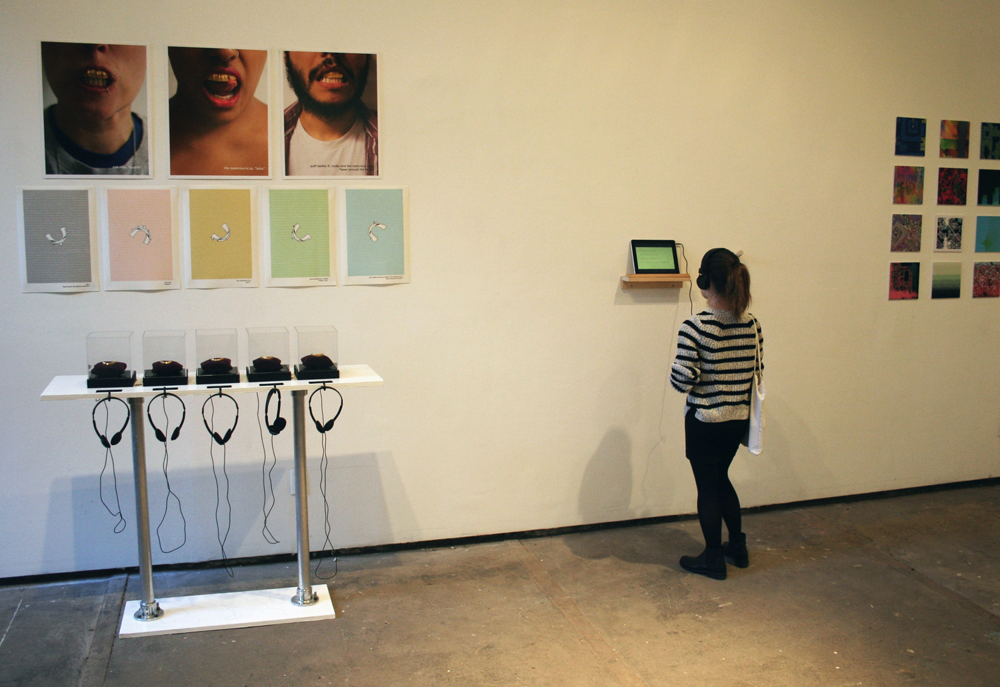 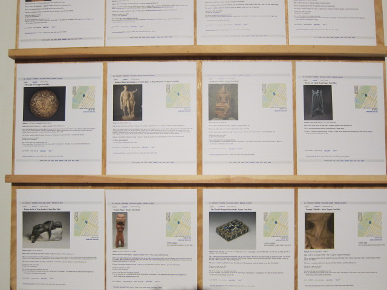 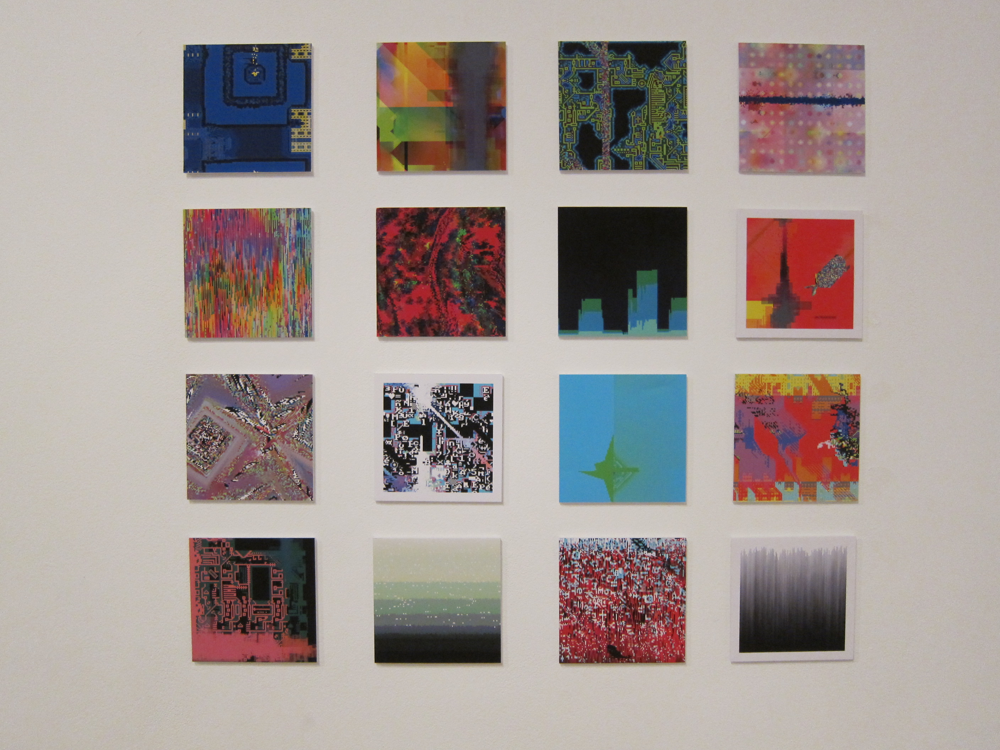 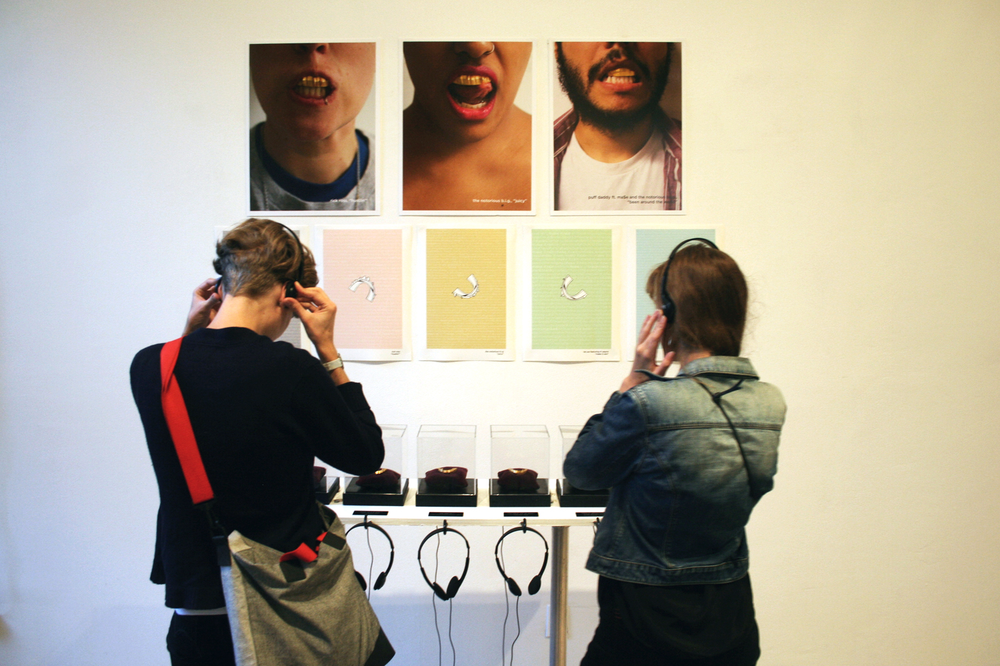 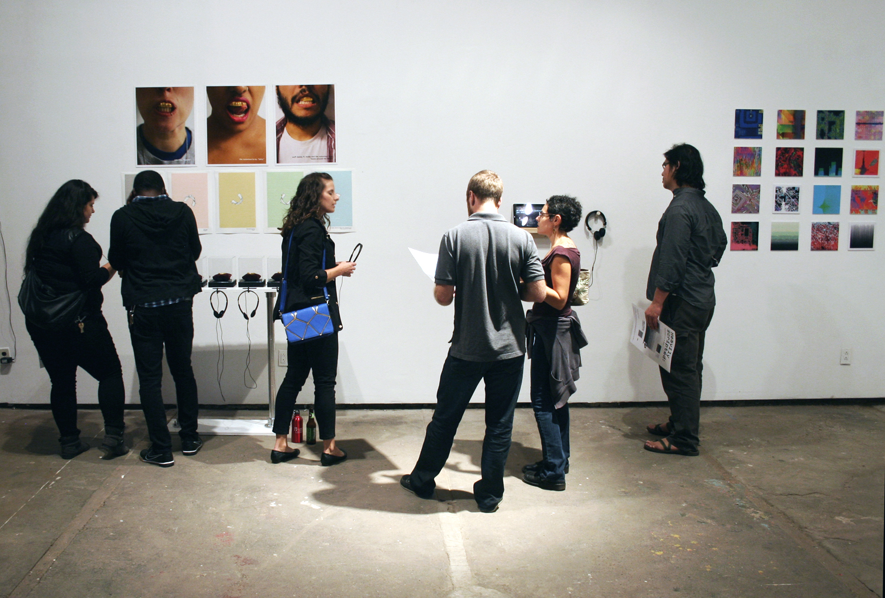 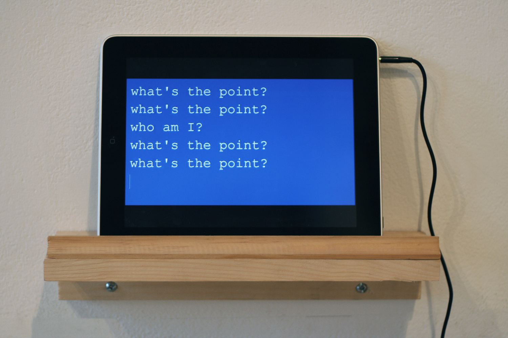 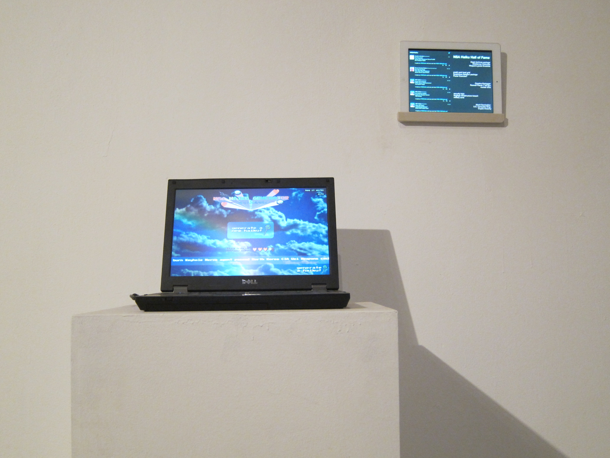 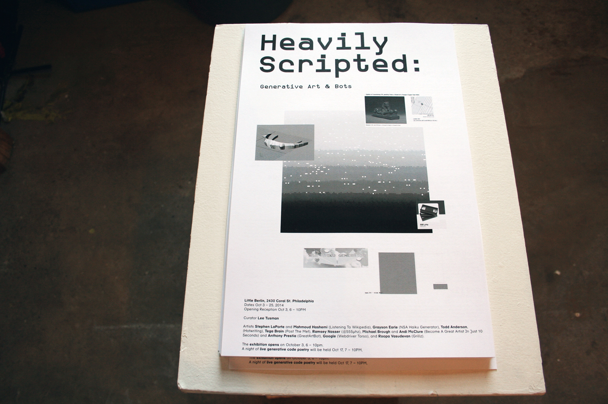 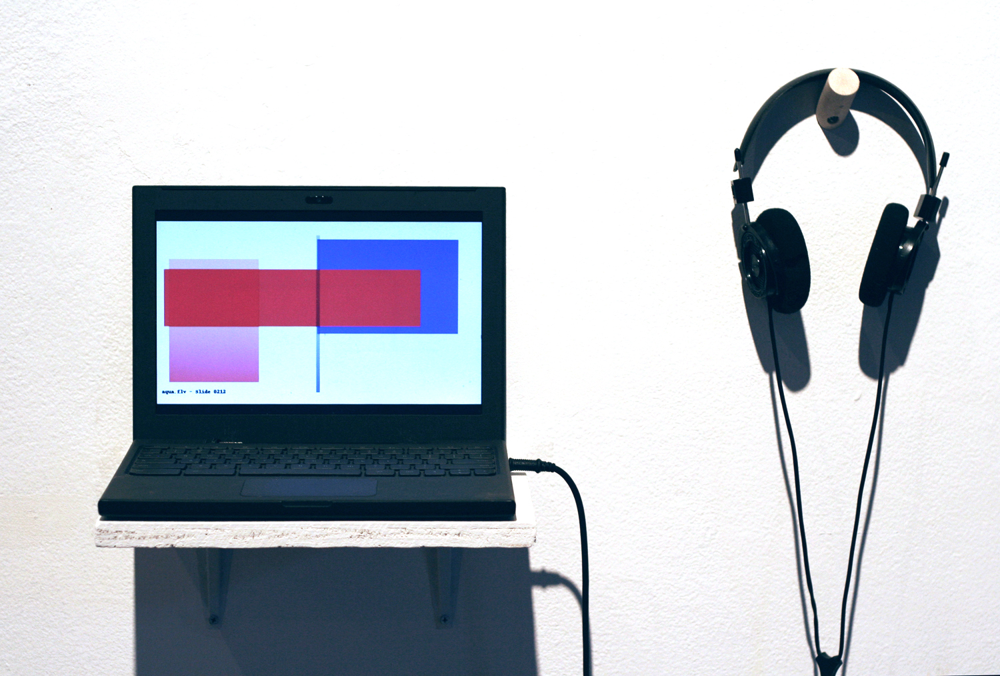
 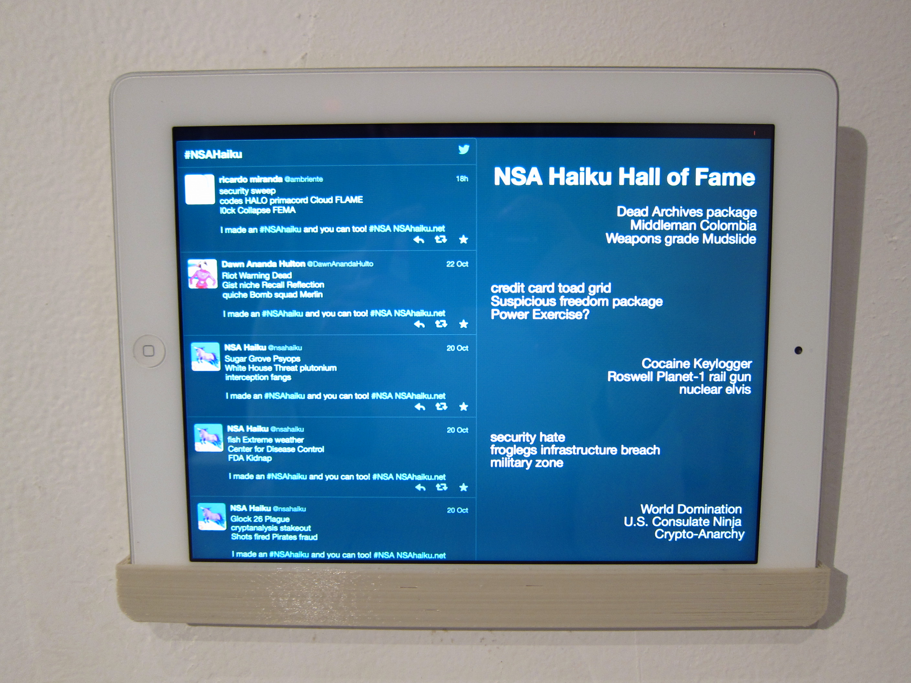
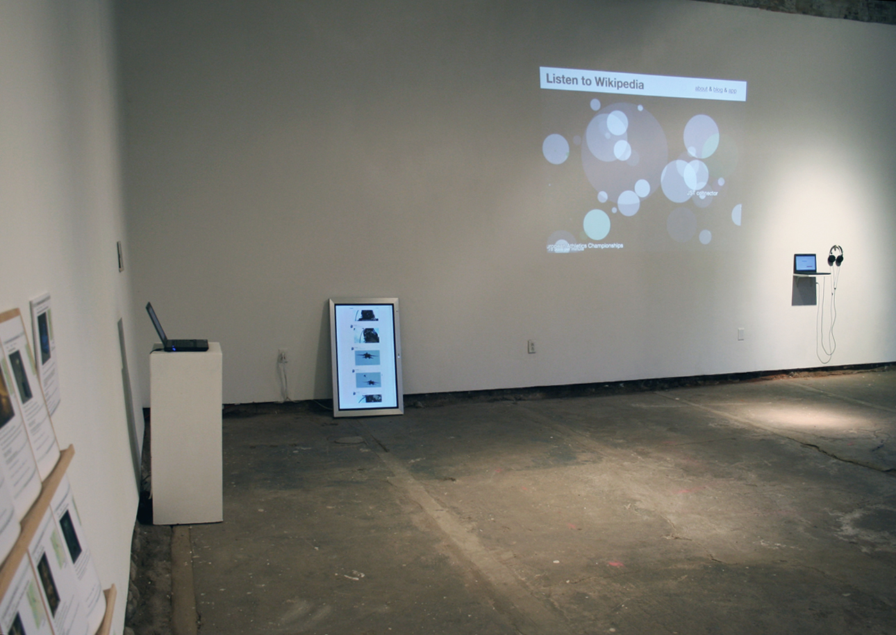
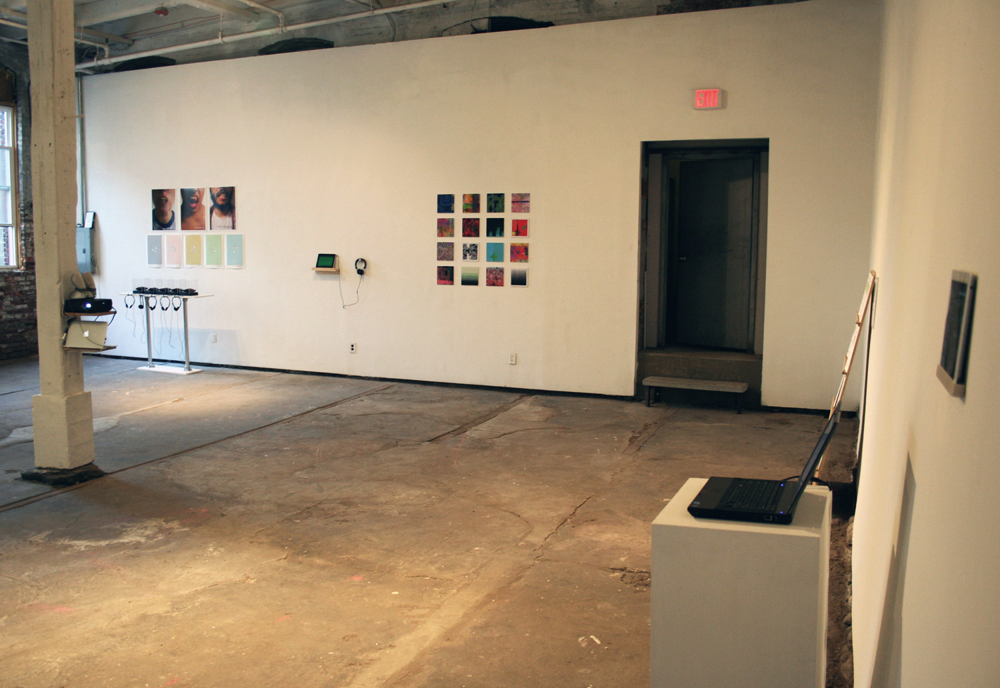
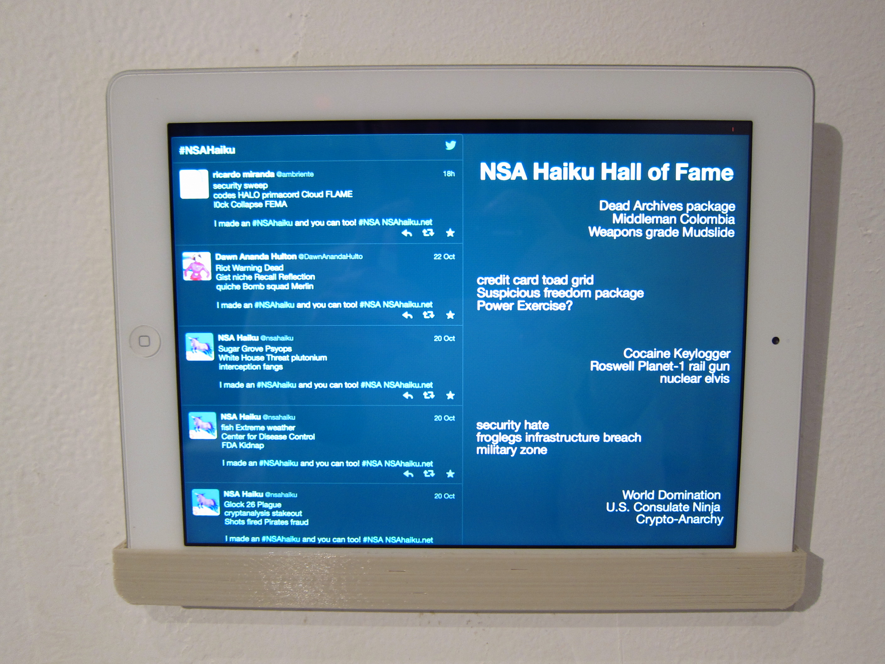
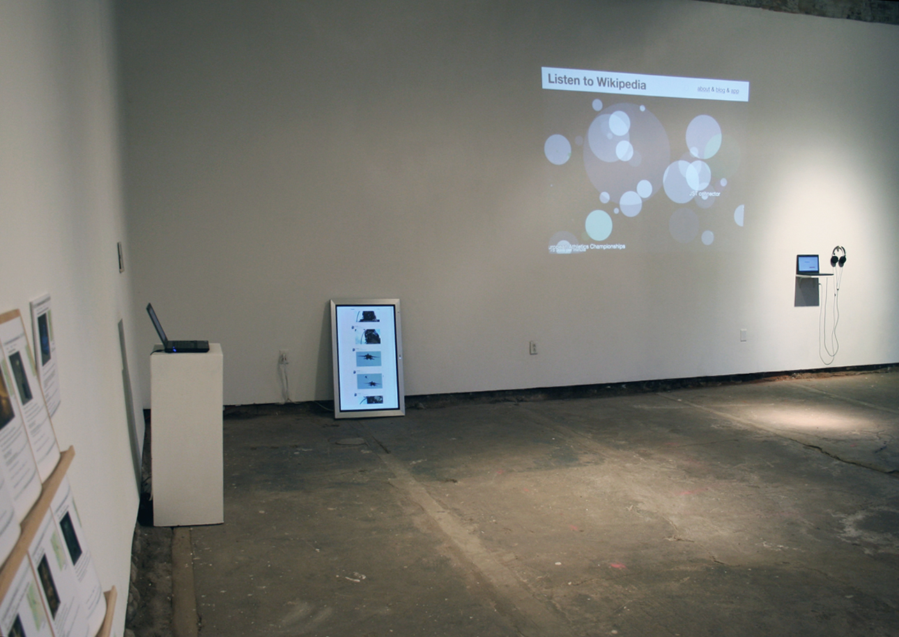
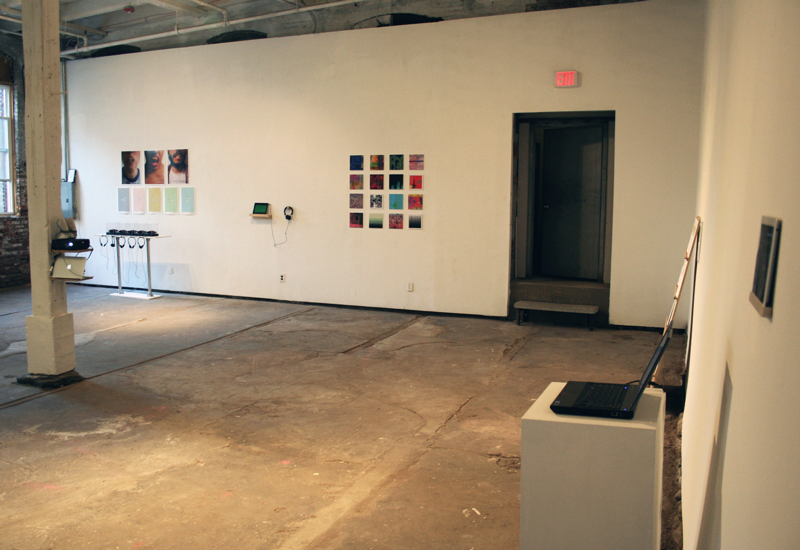